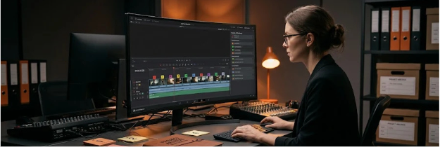
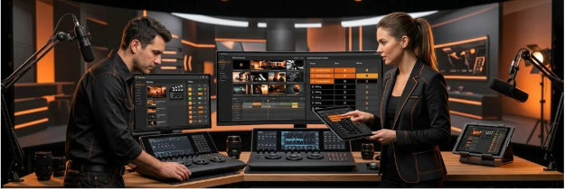
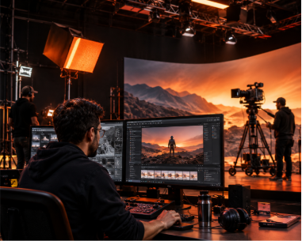
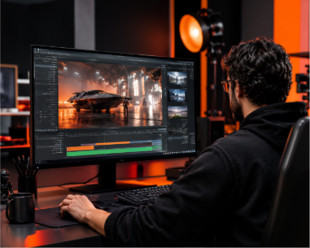
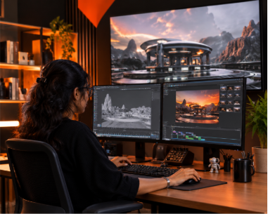
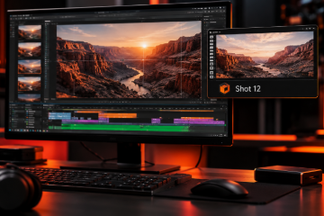
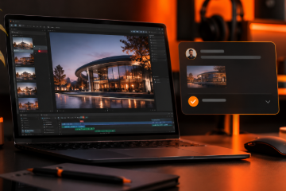
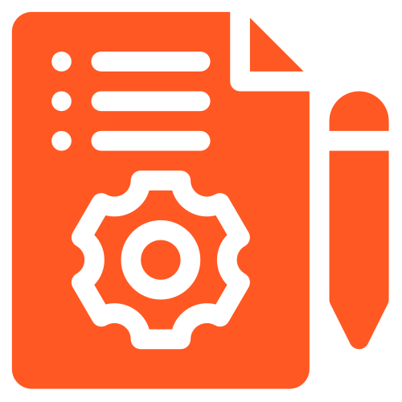

Project management
Manage production projects, deadlines, assigned teams, and project stages through a structured workspace that keeps every production activity organized.
Open for studio pilots
Manage video projects, organize creative assets, track scenes, and streamline production reviews through one centralized platform built for modern media teams.
The product
Caviren brings video production projects, creative assets, and production workflows together, helping teams stay organized, collaborate efficiently, and maintain complete visibility throughout every production stage.
Manage production projects, deadlines, assigned teams, and project stages through a structured workspace that keeps every production activity organized.
Store, categorize, and associate creative assets with relevant projects, making images, videos, and production resources easier to manage.
Organize scenes, maintain shot sequences, assign production tasks, and monitor progress with clear visibility across creative production activities.
Collect creative feedback, manage revision requests, track approval decisions, and maintain review histories for consistent production coordination.
Use Cases
01
Organize film projects, manage scenes and shots, and coordinate production activities across teams.
02
Manage campaign video projects, organize creative assets, and streamline content reviews and approvals.

03
Coordinate video content projects, track production tasks, and keep creative resources organized.

04
Structure virtual production projects, manage scene records, and coordinate creative resources within centralized workflows.
Capabilities
Equip your creative teams with the essential tools to organize production activities, manage creative resources, coordinate workflows, and maintain complete project visibility.
01
Create, organize, and monitor video production projects with deadlines, ownership, and stage tracking.
02
Centralize creative files, organize asset categories, and connect resources with relevant production projects.
03
Structure scene records, maintain shot sequences, and monitor individual production progress.
04
Assign production tasks, track workflow statuses, and coordinate activities across creative teams.
05
Manage creative feedback, revision requests, approval decisions, and review histories in one place.
06
Monitor project progress, scene counts, pending tasks, asset distribution, and approval status through a centralized dashboard.
Proposed showcase
Discover emerging technologies and creative possibilities shaping next-generation video production through intelligent workflows, immersive 3D environments, and AI-powered creative experiences.



Application preview
Ideas arrive live. The concept, the shot, and the next move refresh together.
Concept
A new concept is on its way.

Shot
The scene treatment lands with the concept.

Next move
The generator will name the next step.

Hub Project registryTestimonials
Studio plans
Tell us what you are making. We set the workspace around the show.
Projects, scenes, and reviews for the team already in production.
One show, with assets and approvals attached to the record.
A production record across stages, teams, and reviews.
Message received
Your note is in.